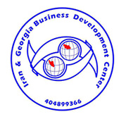
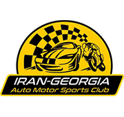
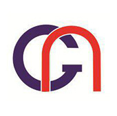
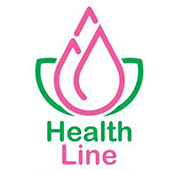

مدیریت سرمایه گذاری
تملک و مالکیت سهام اکثریت در شرکت های زیرمجموعه برای ایجاد یک پرتفوی متنوع.
هاب سرمایه گذاران گرجستان در سال 2018 تاسیس شد. این شرکت با هدف اصلی تبدیل شدن به یکی از شرکت های پیشرو هلدینگ سرمایه گذاری در منطقه شکل گرفت و بر رشد کسب و کار و توسعه اقتصادی تمرکز دارد.
هاب سرمایه گذاران گرجستان به عنوان یک هلدینگ راهبردی فعالیت می کند و بر مالکیت و کنترل شرکت های زیرمجموعه در بخش های گوناگون اقتصادی تمرکز دارد. این شرکت در عملیات روزمره زیرمجموعه های خود دخالت نمی کند، اما در تعیین مسیر راهبردی، نظارت مالی و مدیریت منابع برای رشد پایدار و ثبات آنها نقش کلیدی دارد.
از زمان آغاز فعالیت، هاب سرمایه گذاران گرجستان با تملک سهام اکثریت در شرکت های کلیدی، پرتفوی خود را گسترش داده است. این رویکرد به شرکت امکان می دهد ارزش آفرینی کند و رشد زیرمجموعه های خود را پیش ببرد. ساختار منظم شرکت در سرمایه گذاری و مدیریت، آن را به عاملی موثر برای نوآوری و تعالی کسب و کار در حوزه فعالیت خود تبدیل کرده است.
تملک و مالکیت سهام اکثریت در شرکت های زیرمجموعه برای ایجاد یک پرتفوی متنوع.
تدوین و نظارت بر اجرای سیاست ها و راهبردهای کلی شرکت های زیرمجموعه.
تامین منابع مالی و تسهیل تراکنش های مالی برای شرکت های زیرمجموعه.
پایش و مدیریت ریسک های مرتبط با فعالیت شرکت های زیرمجموعه.
گسترش فعالیت زیرمجموعه ها در حوزه های مختلف اقتصادی در چارچوب یک راهبرد سرمایه گذاری کلان.
بازارگاه B2B ما تولیدکنندگان، تامین کنندگان، صادرکنندگان، توزیع کنندگان و خریداران تجاری تاییدشده را در گرجستان، ایران و منطقه گسترده قفقاز به یکدیگر متصل می کند.
کسب و کارها می توانند توانمندی های تامین خود را معرفی کنند، نیازهای خریدشان را ثبت کنند و برای یافتن شرکای تجاری مناسب از پشتیبانی ما بهره ببرند. هر درخواست پیش از معرفی طرفین بررسی می شود تا ارتباطی مرتبط، کاربردی و قابل اعتماد شکل بگیرد.
مشخصات محصول، مقدار مورد نیاز، محل تحویل و شرایط خرید خود را ثبت کنید تا تامین کنندگان واجد شرایط شناسایی شوند.
محصولات، ظرفیت تولید، گواهی ها، آمادگی صادرات و بازارهای هدف خود را معرفی کنید تا به خریداران تجاری مرتبط دسترسی پیدا کنید.
ما درخواست را بررسی می کنیم، گزینه های مناسب را می یابیم، معرفی طرفین را انجام می دهیم و مراحل بعدی هماهنگی تجاری را پشتیبانی می کنیم.
هاب سرمایه گذاران گرجستان از کسب و کارها در تامین، عرضه و توزیع کالا میان گرجستان، ایران و بازارهای بین المللی پشتیبانی می کند. ما از طریق شبکه تجاری خود به تولیدکنندگان، بازرگانان و خریداران کمک می کنیم فرصت های تامین قابل اعتماد را شناسایی کنند و تجارت فرامرزی را با اطمینان مدیریت کنند.
خدمات تامین کالای ما برای ساده سازی ورود به بازار، اتصال شرکای واجد شرایط و پشتیبانی از جابه جایی کالا از مرحله درخواست اولیه تا هماهنگی تحویل طراحی شده است.
شناسایی تامین کنندگان مناسب، بررسی موجودی کالا و پشتیبانی از خریداران برای یافتن کالاهای رقابتی و قابل اعتماد.
تسهیل ارتباطات، مستندسازی و هماهنگی تجاری برای کالاهایی که در بازارهای منطقه ای و بین المللی جابه جا می شوند.
کمک به شرکا برای هماهنگی برنامه ریزی حمل، پیگیری لجستیک و الزامات عملی تحویل کالاهای تامین شده.
هاب سرمایه گذاران گرجستان، سرمایه گذاران واجد شرایط را به کسب و کارها و پروژه های آینده دار در گرجستان و منطقه قفقاز متصل می کند. ما با ارائه شناخت محلی، معرفی شرکا و هماهنگی عملی، به تبدیل علاقه اولیه به یک فرصت ساختاریافته کمک می کنیم.
هر فرصت به صورت مستقل بررسی می شود. سرمایه گذاران باید پیش از هرگونه تعهد، بررسی های حقوقی، مالی و تجاری مستقل خود را انجام دهند.
دسترسی به فرصت های منتخب در کسب و کارهای موجود، کسب و کارهای نوپا، تولید، تجارت، گردشگری، کشاورزی، فناوری و دیگر بخش های رو به رشد.
معرفی شرکت ها، مجریان و سرمایه گذاران محلی که به سرمایه، تخصص، فناوری، توزیع یا دسترسی به بازارهای بین المللی نیاز دارند.
پشتیبانی از ارزیابی اولیه، شناخت بازار محلی، هماهنگی ذی نفعان و آماده سازی فرصت برای بررسی تخصصی بیشتر.

ID: 404899366
مرکز توسعه ایران و گرجستان به تقویت همکاری اقتصادی و تبادل فرهنگی میان ایران و گرجستان اختصاص دارد. ماموریت ما ایجاد بستری برای کسب و کارها، سرمایه گذاران و کارآفرینان دو کشور است تا فرصت های سودمند مشترک را بررسی و توسعه دهند.
ما از طریق شبکه شرکا و منابع جامع خود، تجارت فرامرزی، سرمایه گذاری و مشارکت های مشترک را در بخش هایی مانند انرژی، کشاورزی، گردشگری و فناوری تسهیل می کنیم. ما به پیشبرد توسعه پایدار و تقویت پیوندهای اقتصادی میان این دو کشور پویا متعهد هستیم.

ID: 404899366
باشگاه اتومبیلرانی و موتوراسپرت ایران و گرجستان آموزش های پیشرفته مسابقات خودرو و موتورسیکلت را در گرجستان ارائه می کند. برنامه های ما ترکیبی کامل از دوره های نظری و عملی است و انواع سطوح مسیر مانند آسفالت، بتن، مسیرهای خیس، یخ زده و برفی را پوشش می دهد.
شرکت کنندگان با آموزش تخصصی و تمرین های عملی، مهارت های ضروری برای مسابقات رقابتی را به دست می آورند. پس از پایان موفق دوره، گواهی رسمی دریافت می کنند که آمادگی آنها را برای رویدادهای حرفه ای خودرو و موتوراسپرت نشان می دهد.

ID: 404899366
جورجین ناب نوش بین الملل یک شرکت ایرانی مستقر در گرجستان است که در خدمات صادرات و واردات تخصص دارد. این شرکت با شبکه ای قدرتمند میان بازرگانان، تولیدکنندگان، صنایع و ارائه دهندگان خدمات در ایران و گرجستان، جایگاه مناسبی برای گسترش دسترسی شما به بازار و معرفی مزیت های رقابتی دو منطقه دارد.
ما متعهد هستیم به عنوان نماینده فروش قابل اعتماد برای محصولات شما فعالیت کنیم و این تعهد بر تجربه گسترده در خدمات مشتری محور تکیه دارد. تیم ما به پشتیبانی از رشد کسب و کار شما و اثبات ارزش خود به عنوان شریکی مورد اعتماد در این بازارها پایبند است.

ID: 402119603
هلث لاین شرکتی ثبت شده در گرجستان است که به توسعه راهکارهای سلامت و تندرستی اختصاص دارد. این شرکت با تمرکز بر محصولات و خدمات باکیفیت، به عنوان شریکی قابل اعتماد در صنعت سلامت فعالیت می کند و ارتباط میان گرجستان و بازارهای بین المللی را تقویت می کند.
تعهد ما به تعالی و مراقبت مشتری محور، ما را به منبعی ارزشمند برای خدمات و محصولات نوآورانه حوزه سلامت تبدیل کرده است.
گرجستان بخشی کوچک از تاریخ زنده است که در چهارراه اروپا و آسیا قرار دارد. این کشور با حفظ سنت دیرینه مهمان نوازی، با سرعت در حال نوسازی است و از شما استقبال می کند. کمتر کشوری در جهان چنین تنوعی را ارائه می دهد. گرجستان در مرزهای کوچک خود بلندترین کوه های اروپا و 12 قله بلندتر از مون بلان را در خود جای داده است. از یخچال ها تا سواحل، از مراتع آلپی تا نیمه بیابان و با پوشش جنگلی نزدیک به 40 درصد از خاک کشور، گرجستان چشم اندازی حقیقتا متنوع دارد.
در هر گوشه گرجستان کلیساهای کوهستانی، قلعه ها و سرداب های کهن شراب دیده می شود. گرجستان خاستگاه فرهنگ شراب است؛ جایی که هشت هزار سال پیش انسان هنر شراب سازی را کشف کرد و امروز میزبان بیش از 500 گونه انگور است. گرجی ها هنوز از سنت باستانی شراب سازی با کوزه های بزرگ سفالی دفن شده در زمین استفاده می کنند و بسیاری از شراب های گرجستان جوایز و اعتبار بین المللی کسب کرده اند.
گرجستان به مهمان نوازی مشهور است و مهمان در این کشور هدیه ای از سوی خدا دانسته می شود. گرجستان چیزهای زیادی برای ارائه به مهمان دارد؛ از جمله سوپرا، ضیافت سنتی با غذاهای خوش طعم، آواز چندصدایی و آیین های نوشانوش که تجربه گرجستان را فراموش نشدنی می کند.
قلب گرجستان شهر تفلیس است که در میان تپه ها و کوه ها قرار دارد. تفلیس با کلیساهای کهن، قلعه ای باشکوه و خانه های سنتی، یکی از دیدنی ترین و دلنشین ترین شهرهای کشور است. گرجستان به عنوان پیوند اصلی شرق و غرب، بخشی از مسیر تاریخی جاده ابریشم بوده و امروز نیز منطقه ای مهم برای تجارت به شمار می رود. گرجستان مقصدی چهارفصل است. پیست های اسکی گودائوری و باکوریانی از مشهورترین پیست های کشور هستند و سواحل دریای سیاه نیز در تابستان پذیرای مهمانان هستند.
گرجستان در چهارراه اروپا و آسیا جایگاهی منحصربه فرد دارد و با آذربایجان، ارمنستان، ترکیه و روسیه مرز زمینی مشترک دارد. موقعیت راهبردی این کشور در کنار دریای سیاه، دسترسی به مسیرهای مهم تجاری را فراهم می کند و اهمیت آن را به عنوان مرکز تجاری منطقه افزایش می دهد.
گرجستان محیطی مناسب برای کسب و کار ارائه می دهد و قوانین آن از سرمایه گذاران خارجی حمایت می کند.
سرمایه گذاران خارجی می توانند مالکیت کامل کسب و کارها و دارایی ها را داشته باشند و از کنترل و انعطاف کامل برخوردار شوند.
گرجستان از سال 2000 عضو سازمان تجارت جهانی است و با استانداردهای تجارت بین الملل هماهنگ عمل می کند؛ موضوعی که شفافیت و اعتماد را افزایش می دهد.
صادرات و صادرات مجدد از مالیات بر ارزش افزوده و تعرفه های گمرکی معاف هستند و محیطی مقرون به صرفه برای تجارت ایجاد می کنند.
گرجستان با کشورهای متعدد منطقه توافق نامه تجارت آزاد دارد و تجارت روان در منطقه را تسهیل می کند.
بیش از 30 درصد نیروی کار دارای مدرک دانشگاهی است و دسترسی به نیروی کاری تحصیل کرده و مقرون به صرفه فراهم است.
گرجستان محدودیت تجاری با کشورهای جهان ندارد و به سیاست تجارت آزاد متعهد است؛ سیاستی که از رشد اقتصادی پایدار و ثبات سرمایه گذاری حمایت می کند.
بخش صنعتی نقش مهمی در اقتصاد گرجستان دارد و در سال های اخیر رشد قابل توجهی داشته است.
بهترین سرمایه گذاری در گرجستان، مانند هر کشور دیگری، به اهداف مالی، میزان ریسک پذیری و افق سرمایه گذاری شما بستگی دارد. گرجستان در سال های اخیر به دلیل محیط مناسب کسب و کار، موقعیت راهبردی و فرصت های موجود در بخش های مختلف، سرمایه گذاران خارجی را جذب کرده است.
بازار املاک گرجستان، به ویژه در تفلیس، رشد قابل توجهی داشته و فرآیند ثبت مالکیت برای سرمایه گذاران خارجی ساده و شفاف است.
گرجستان به مقصدی محبوب برای گردشگران تبدیل شده و سرمایه گذاری در هتل ها، اقامتگاه ها و خدمات مهمان نوازی می تواند سودآور باشد.
کشاورزی یکی از بخش های کلیدی گرجستان است و فرصت هایی برای سرمایه گذاری در کشت محصولات، تاکستان ها و محصولات کشاورزی وجود دارد.
گرجستان در زیرساخت های انرژی، از جمله نیروگاه های آبی و پروژه های انرژی تجدیدپذیر، سرمایه گذاری کرده است.
گرجستان اکوسیستم فناوری رو به رشدی دارد و تفلیس جامعه استارتاپی پویایی را در خود جای داده است.
مناطق آزاد صنعتی گرجستان مشوق های مالیاتی و محیطی مناسب برای تولید و صنایع صادرات محور ارائه می دهند.
گرجستان دارای بورس اوراق بهادار است و امکان سرمایه گذاری در شرکت های پذیرفته شده در آن وجود دارد.
گزینه های سنتی سرمایه گذاری مانند سپرده های بانکی و اوراق دولتی می توانند ثبات و بازده قابل پیش بینی فراهم کنند.
پیش از هرگونه سرمایه گذاری در گرجستان یا هر کشور دیگر، انجام بررسی های دقیق، شناخت مقررات محلی و دریافت مشاوره از متخصصان مالی ضروری است. هنگام تصمیم گیری سرمایه گذاری، میزان ریسک پذیری، افق سرمایه گذاری و راهبرد تنوع بخشی خود را در نظر بگیرید.
همچنین بهتر است برای تصمیم گیری آگاهانه، از تحولات اقتصادی و سیاسی کشور به روز باشید. مشورت با وکیل محلی یا مشاور سرمایه گذاری نیز می تواند مفید باشد.